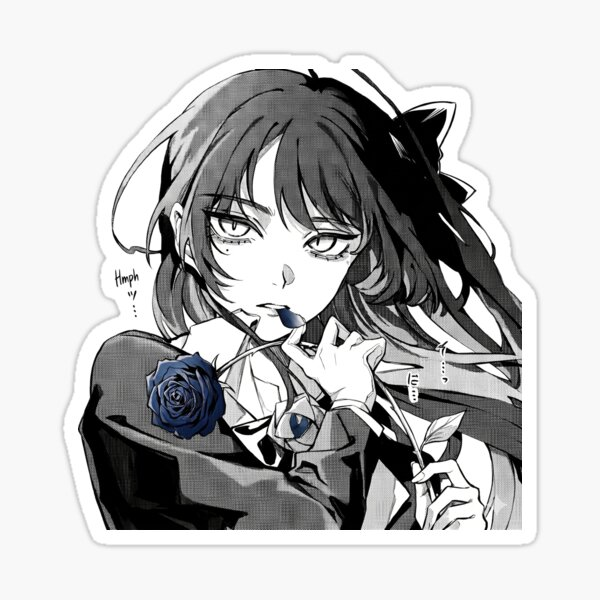

STICKERS / INDEPENDENT FAN ART
Ado
Rose Portrait
A black-and-white portrait of Ado with a rose as its focal point. Manga-inspired fan art for anyone drawn to a monochrome composition.
View product on Redbubble ↗See current prices, options and availability on Redbubble.
Before you choose
For a laptop or notebook, check the sticker size and available finish. Measure the space where you want to place it so the portrait has room to stand out.
Fan art by Oddloop42
An independent design inspired by Ado, available from Oddloop42 on Redbubble. This is not official merchandise and does not imply affiliation with the singer.